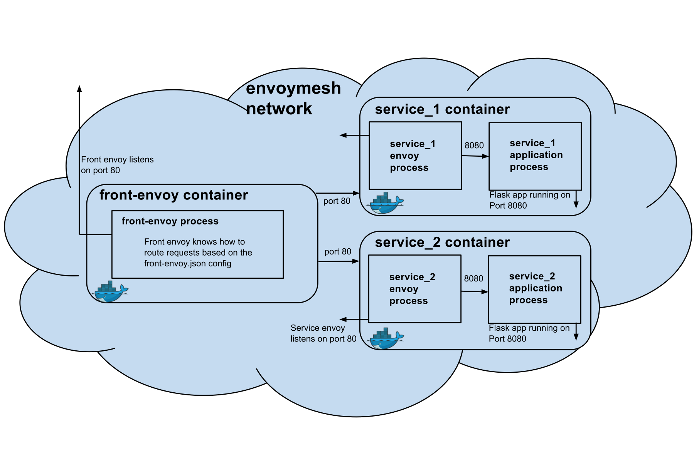

Envoy 是一款由 Lyft 开源的，使用 C++ 编写的 L7 代理和通信总线，目前是 CNCF 旗下的开源项目，代码托管在 GitHub 上，它也是 Istio service mesh 中默认的 data plane。本文将给出使用 Envoy 作为 service mesh 的数据平面的示例，应用使用 docker-compose 编排。
Envoy 包括如下特性：
Envoy 本身无法构成一个完整的 Service Mesh，但是它可以作为 service mesh 中的应用间流量的代理，负责 service mesh 中的数据层。
更多信息请参考 Envoy 官网。
本文是使用 Envoy 作为前端代理的介绍，仅使用 docker 容器和 docker-compose 做编排在单机中运行，帮助我们从更底层了解 Envoy，当我们将 Envoy 作为 Istio Service Mesh 的 data panel 的时候将更加游刃有余。
Envoy 中的所有规则配置跟 Kubernetes 一样都是通过 YAML 文件来完成的。在继续下面的步骤之前，首先克隆 Envoy 的 GitHub repo。
git clone https://github.com/envoyproxy/envoy.git
Envoy 官方提供了以下打包用例：
全部可以使用 docker-compose 运行，代码可以在 https://github.com/envoyproxy/envoy/tree/master/examples 找到。
Envoy 在 envoymesh 的边缘做反向代理，详细使用方式见 https://www.envoyproxy.io/docs/envoy/latest/start/sandboxes/front_proxy，在此我将解说下以下问题：
本示例的架构图如下所示，此时 Envoy 将作为一个反向代理，类似于 Nginx，但与 Nginx 不同的是它还会作为一个进程，伴随每个服务一起运行在同一个容器中（在 Kubernetes 中可以作为 Sidecar 与应用容器一起运行在同一个 Pod 中）。

在此示例中一共有 3 个服务，我们需要为其创建容器编排的 docker-compose.yml 文件。
version: '2'
services:
front-envoy:
build:
context: .
dockerfile: Dockerfile-frontenvoy
volumes:
- ./front-envoy.yaml:/etc/front-envoy.yaml
networks:
- envoymesh
expose:
- "80"
- "8001"
ports:
- "8000:80"
- "8001:8001"
service1:
build:
context: .
dockerfile: Dockerfile-service
volumes:
- ./service-envoy.yaml:/etc/service-envoy.yaml
networks:
envoymesh:
aliases:
- service1
environment:
- SERVICE_NAME=1
expose:
- "80"
service2:
build:
context: .
dockerfile: Dockerfile-service
volumes:
- ./service-envoy.yaml:/etc/service-envoy.yaml
networks:
envoymesh:
aliases:
- service2
environment:
- SERVICE_NAME=2
expose:
- "80"
networks:
envoymesh: {}
使用 docker-compose 启动可以保证三个服务都在同一个网络内，即 frontproxy_envoymesh 网络中。
其中 front-envoy 是前端（边缘）Envoy 服务，用来做反向代理，它使用的是 Dockerfile-frontenvoy 文件来构建镜像的，我们来看下该 Dockerfile 的内容。
FROM envoyproxy/envoy:latest
RUN apt-get update && apt-get -q install -y \
curl
CMD /usr/local/bin/envoy -c /etc/front-envoy.yaml --service-cluster front-proxy
其中 /etc/front-envoy.yaml 是本地的 front-envoy.yaml 挂载进去的。我们看下该文件的内容。
static_resources:
listeners:
- address:
socket_address:
address: 0.0.0.0
port_value: 80
filter_chains:
- filters:
- name: envoy.http_connection_manager
config:
codec_type: auto
stat_prefix: ingress_http
route_config:
name: local_route
virtual_hosts:
- name: backend
domains:
- "*"
routes:
- match:
prefix: "/service/1"
route:
cluster: service1
- match:
prefix: "/service/2"
route:
cluster: service2
http_filters:
- name: envoy.router
config: {}
clusters:
- name: service1
connect_timeout: 0.25s
type: strict_dns
lb_policy: round_robin
http2_protocol_options: {}
hosts:
- socket_address:
address: service1
port_value: 80
- name: service2
connect_timeout: 0.25s
type: strict_dns
lb_policy: round_robin
http2_protocol_options: {}
hosts:
- socket_address:
address: service2
port_value: 80
admin:
access_log_path: "/dev/null"
address:
socket_address:
address: 0.0.0.0
port_value: 8001
我们看到其中包括了三大配置项：
/stats 获取当前 envoymesh 的一些统计信息，访问 /server_info 获取 Envoy 的版本信息使用 docker-compose 启动三个容器。
$ pwd
envoy/examples/front-proxy
$ docker-compose up --build -d
$ docker-compose ps
Name Command State Ports
-------------------------------------------------------------------------------------------------------------
example_service1_1 /bin/sh -c /usr/local/bin/ ... Up 80/tcp
example_service2_1 /bin/sh -c /usr/local/bin/ ... Up 80/tcp
example_front-envoy_1 /bin/sh -c /usr/local/bin/ ... Up 0.0.0.0:8000->80/tcp, 0.0.0.0:8001->8001/tcp
我们下面将过一遍 Envoy 作为前端代理的所有功能，这些功能是通用功能。
访问 service1 http://localhost:8000/service/1 将看到如下输出。
$ curl -v localhost:8000/service/1
*
Trying ::1...
* TCP_NODELAY set
* Connected to localhost (::1) port 8000 (#0)
> GET /service/1 HTTP/1.1
> Host: localhost:8000
> User-Agent: curl/7.54.0
> Accept: */*
>
< HTTP/1.1 200 OK
< content-type: text/html; charset=utf-8
< content-length: 89
< server: envoy
< date: Fri, 20 Apr 2018 08:26:33 GMT
< x-envoy-upstream-service-time: 14
<
Hello from behind Envoy (service 1)! hostname: a3e4185a9a49 resolvedhostname: 172.18.0.4
* Connection #0 to host localhost left intact
访问 service2 http://localhost:8000/service/2 将看到如下输出。
* Trying ::1...
* TCP_NODELAY set
* Connected to localhost (::1) port 8000 (#0)
> GET /service/2 HTTP/1.1
> Host: localhost:8000
> User-Agent: curl/7.54.0
> Accept: */*
>
< HTTP/1.1 200 OK
< content-type: text/html; charset=utf-8
< content-length: 89
< server: envoy
< date: Fri, 20 Apr 2018 08:27:27 GMT
< x-envoy-upstream-service-time: 10
<
Hello from behind Envoy (service 2)! hostname: f6650e1911a0 resolvedhostname: 172.18.0.3
* Connection #0 to host localhost left intact
我们看到访问请求被路由到了正确的服务后端。
增加 service1 的示例数。
$ docker-compose scale service1=3
WARNING: The scale command is deprecated. Use the up command with the --scale flag instead.
Starting frontproxy_service1_1 ... done
Creating frontproxy_service1_2 ... done
Creating frontproxy_service1_3 ... done
$ docker-compose ps
Name Command State Ports
---------------------------------------------------------------------------------------------------------------------------
frontproxy_front-envoy_1 /usr/bin/dumb-init -- /bin ... Up 10000/tcp, 0.0.0.0:8000->80/tcp, 0.0.0.0:8001->8001/tcp
frontproxy_service1_1 /bin/sh -c /usr/local/bin/ ... Up 10000/tcp, 80/tcp
frontproxy_service1_2 /bin/sh -c /usr/local/bin/ ... Up 10000/tcp, 80/tcp
frontproxy_service1_3 /bin/sh -c /usr/local/bin/ ... Up 10000/tcp, 80/tcp
frontproxy_service2_1 /bin/sh -c /usr/local/bin/ ... Up 10000/tcp, 80/tcp
我们看到现在 service1 已经有了 3 个实例，现在再访问 service1 http://localhost:8000/service/1。
$ while true;do curl localhost:8000/service/1;sleep 1;done
Hello from behind Envoy (service 1)! hostname: a3e4185a9a49 resolvedhostname: 172.18.0.4
Hello from behind Envoy (service 1)! hostname: fe44dba64122 resolvedhostname: 172.18.0.5
Hello from behind Envoy (service 1)! hostname: c5b9f1289e0f resolvedhostname: 172.18.0.6
Hello from behind Envoy (service 1)! hostname: a3e4185a9a49 resolvedhostname: 172.18.0.4
Hello from behind Envoy (service 1)! hostname: fe44dba64122 resolvedhostname: 172.18.0.5
Hello from behind Envoy (service 1)! hostname: c5b9f1289e0f resolvedhostname: 172.18.0.6
我们看到对 service1 的已经有负载均衡了，使用的策略是 round_robin，这些都是在 front-envoy.yaml 文件中的 cluster 项下配置的。
访问 http://localhost:8001 可以看到 Envoy admin 提供以下管理 API 端点。
| 命令 | 描述 |
|---|---|
| / | Admin 主页 |
| /certs | 打印机器上的 certs |
| /clusters | upstream cluster 状态 |
| /config_dump | 输出当前的 Envoy 配置 |
| /cpuprofiler | 开启/关闭 CPU profiler |
| /healthcheck/fail | 导致服务失败健康检查 |
| /healthcheck/ok | 导致服务通过健康检查 |
| /help | 打印管理命令的帮助信息 |
| /hot_restart_version | 打印热重启兼容版本 |
| /listeners | 打印 listener 地址 |
| /logging | 查询/更改日志级别 |
| /quitquitquit | 退出服务 |
| /reset_counters | 将计数器重置为 1 |
| /runtime | 打印运行时值 |
| /runtime_modify | 修改运行时值 |
| /server_info | 打印服务器版本/状态信息 |
| /stats | 打印服务器状态统计信息 |
| /stats/prometheus | 打印 prometheus 格式的服务器状态统计信息 |
Envoy 提供了 API 管理端点，可以对 Envoy 进行动态配置，参考 v2 API reference。